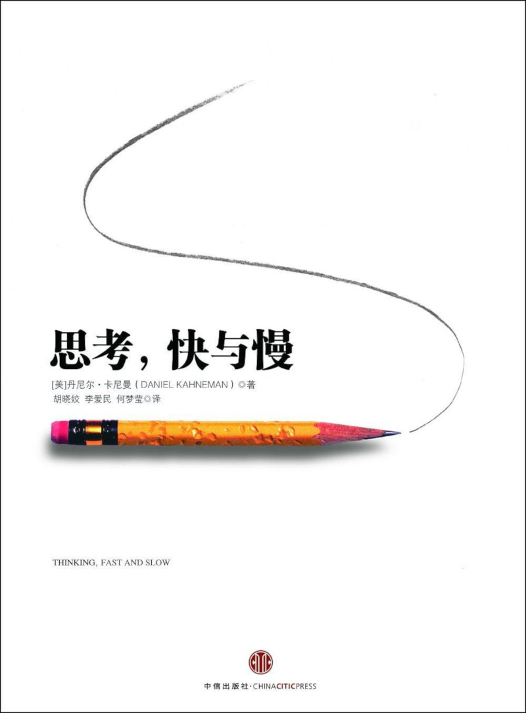

注：【】部分为笔者心得，非原文摘抄。
- 学会区别常会出现重大错误的情境，在风险很高的时候，尽力避免这些错误。
- 发现别人的错误总比发现自己的错误更容易。
- 如果人的大脑正处于冲刺的状态，就有可能（对次要信息）产生有效的屏蔽。
- 瞳孔是衡量与思维活动形影不离的生理刺激的标尺。
- 快速判断最严重的困难或者快速锁定最佳时机并作出迅速反应能提高生存概率。
- 最省力法则：如果达成同一个目标的方法有多种，人们往往会选择最简单的那一种。
- 懒惰是人类的本性。
- 大脑前额叶，人类的这个区域要比其它灵长类的更为发达，它是与智力密切相关的重要脑区。
- 散步能唤醒身体的感应，使大脑思维更加敏捷。
- 当人们忙于认知活动时，更有可能作出自私的抉择。
- 如果你必须强迫自己去做某件事，而此时这件事又面临一个新的挑战，你就会很不情愿或是根本无法进行自我控制。这种现象被命名为自我损耗（Ego Depletion）。
- 神经系统消耗的葡萄糖比身体其他部位消耗的都要多。在积极进行复杂的认知推理或者忙于要求自我控制的任务时，人的血糖就会下降，（因此）自我损耗的影响能通过注射葡萄糖得到缓解。
- 当人们相信某个结论是正确的时候，他们很可能会相信支持这个结论的论证，哪怕这些论证不正确。
- 避免思维上懒惰的人可以被叫做“勤快人”。他们更机警，思维更活跃，不会满足于貌似正确的答案，对自己的直觉会常持怀疑态度。心理学家基思·斯坦诺维奇（Keith E.Stanovich）认为他们更理性。
- 苏格兰哲学家大卫·休谟（David Hume）将联想的原则缩减为三个：相似性、空间连接以及因果关系。
- 你觉得自己很了解自己，但其实你错了。
- 由概念影响行为的启动效应被称为概念运动效应。
- 钱会滋生个人主义。
- 在一个专制国家中，到处挂着领袖的肖像不仅能向你传达“老大哥在看着你”的感觉，还会使你逐渐丧失自主的思想和独立的行动能力。
- 使人牢记“人终将一死”这一说法能让独裁的主张更得人心，因为在人们恐惧死亡的情况下，独裁的主张会使人心安。
- 如果某个判断是基于认知放松或认知紧张作出的，那就一定会造成错觉。任何能使联想机制运行更轻松、更顺利的事物都会使我们心生偏见。想让人们相信谬误有个可靠的方法，那就是不断重复，因为人们很难对熟悉感和真相加以区别。
- 如果你使用彩色字体的话，亮蓝或大红的文字会比绿、黄、灰蓝等色调更容易让人相信文字内容的真实性。
- 如果你很在意自己在别人眼里是否值得信赖、是否聪明睿智，那么说话时就言简意赅吧，能用简单句的时候就别用复杂句。
- 用浮夸的语言来表达熟悉的概念是一种智商低下、可信度差的表现。
- 押韵的格言比没有韵脚的格言显得更加深刻。
- 联想关系的对称性是讨论联想连贯性的首要主题。
- 曝光效应，又称多看效应、（简单、单纯）暴露效应、（纯粹）接触效应等，是指个体接触一个刺激的次数越频繁，个体对该刺激就越喜欢的现象。
- 当人们完全没有意识到自己看见了刺激物时，其曝光效应会更强。
- 重复曝光的结果有益于机体适应其所处的有生命和无生命的环境。这一效应能使机体鉴别出安全的物品和栖息地，是最为原始的社会性依附的基础。因此，重复曝光构成了社会组织和社会整合的基础，而社会组织与社会整合又是心理稳定与社会稳定的基础。
- 创新是发生在能让人联想无限的环境中。
- 不舒服和不开心时，就会丧失自己的直觉。
- 认知放松与愉快的感觉互为因果。
- 对惊喜的承受能力是你精神生活中的一个重要方面，而且惊喜本身也是最敏感的指示，它可以表明我们如何理解这个世界，我们希望从这个世界中得到什么。
- 联想记忆的运作是导致“确认偏误”的原因之一。
- 喜爱（或讨厌）某个人就会喜爱（或讨厌）这个人的全部——包括你还没有观察到的方面——这种倾向就叫光环效应。
- 人们对一个人性格特征的观察顺序是随机的。然而，顺序的确很重要，因为光环效应注重第一印象，而后续信息在很大程度上都被消解掉了。
- 一个好故事最重要的是信息的前后一致性，而不是其完整性。
- 无论是证据的数量还是质量都与主观自信关系不大。每个人对自身想法的自信程度主要取决于他们对亲眼所见的事情的讲述效果，即使他们几乎什么都没有看到也没有关系。
- 同一信息的不同表达方式常常会激发人们不同的情感。
- 在对可能性没有任何了解的情况下，当人们按照要求对可能性作出判断时，他们实际上是对其它的事情作了判断，并且认为自己已经完成了判断可能性的任务。
- 人们对样本大小没有足够的敏感性。
- 感性并不善于质疑。它抑制了不明确的信息，不由自主地将信息处理得尽可能连贯。除非该信息被立刻否定，不然，它引发的联想就会扩散开，仿佛这条信息就是千真万确的。理性能够提出质疑，因为它可以同时包含不相容的多种可能性。然而，保持这种质疑会比不知不觉相信其真实性更加困难。
- 如果你（总是）听从自己的直觉，就常常会因为把随机事件看做是有规律的事件而犯错。
- 夸大对小样本的信任只是众多错觉中的一种。
- 对偶发事件作出因果关系的解释必然是错误的。
- 在协商中率先出击的一方往往会占有优势。
- 【对于大部分人来说，“现实”就是不用怎么努力就能获得的；对于极少数人来说，没有什么是“不现实”的。】
- 问题的替代必然会产生系统性错误。
- 自我评估是由事件呈现在脑海中的轻松度来衡量的。轻松地想起某件事的体验比想起事情的数量更重要。
- 判断涉及自身情况的人往往更有可能关注他们从记忆中提取的时间数量，对流畅度则不大关注。
- 我们脑海中的世界并不是真实世界的准确反映；我们对事件发生频率的估测也会受到自己接触这些信息和频率与个人情感强烈程度等因素的影响。
- 感性细节掌控理性大局。
- 当专家和公众对各自的优先权意见分歧时，“双方必须尊重对方的见解和智慧”。
- 风险界定是一种权力运作。
- 负面报道自然可以吓到众人，而且这种恐慌情绪也促使媒体争相报道，这就是效用层叠的基本机制。
- 政策制定者必须努力保护公众不受恐惧情绪的影响，而不是只保护其不受真实存在的危险的伤害。
- 合取谬误（Conjunction Fallaly）这个想法，通过直接比较，人们总会认为两个事件的联合出现比只出现其中一件事的可能性要大。
- 人们对更详细、更丰富的描述做出的概率判断更高。
- 技能训练的一条重要原则：对良好表现的嘉奖比对错误的惩罚更有效。
- 直觉性预测需要校正是由于它并不具有回归性，因此是带有偏见的。
- 无偏见预测的一个特征就是，只有在信息非常有效时才允许人们对罕见或极端的事件做出预测。
- 风险投资家的目标是正确判断极端情况，甚至以高估其它许多风险为代价也在所不惜。
- 即便是最有前景的新建公司，其成功概率也只是中等水平而已。
- 小样本的结果往往有更多的运气成分。
- 自信是由你根据可得信息提炼出来的最合理的故事的连贯程度决定的。但要注意：你的直觉会产生极端预测，而你也很容易对这种极端信心满满。
- 光环效应通过夸大评估的一致性来保持简单和连贯的特点：好人只做好事，坏人全都很坏。
- 想知道一个解释是否行得通，可以对它做一个最终测试，看它能否使这个事件事先就能被预测到。
- 人类的大脑无法妥善处理没有发生的事情。
- 事实上，很多实实在在发生过的重要事件中包含着众多抉择，这些抉择会诱导你夸大技能的作用并低估运气对最终结局的影响。
- 运气的成分越多，从中能学到的就越少。
- 如果一个事件果真发生了，人们就会夸大自己此前作出的预测的可能性；如果可能的事件并未发生，受试者就会错误地回忆自己当初一直都认为此事件发生的可能性不大。
- 结果越糟糕，后见之明的偏见就越严重。
- 公司是非常成功还是不怎么成功，其间的区别在很大程度上要看这家公司是否幸运。
- 对某个判断的主观信息并不是对这个判断正确概率的合理评估。
- 由衷地承认不确定性乃明智之举。
- 认知错觉比视觉错觉更顽固。
- 专家犯错误不是因为他们的思考内容，而是因为他们的思考方式。
- 环境有规律可循，直觉才可相信。
- 技能习得的两个基本条件：
- 一个可预测的、有足够规律可循的环境；
- 一个通过长期训练学习这些规律的机会。
- 努力养成采纳外部意见的决策习惯。
- 过于乐观的计划随处可见。
- 规划谬误描述下列计划和预测：
- 不切实际地接近理想状况（的计划和预测）；
- 可通过参考类似案例的数据得到提高（的计划和预测）。
- 如果某个团队中只有支持决策的人才有发言权，那么对怀疑的抑制就会造成这个团队的过度自信。
- 理论诱导的盲区（Theory-induced Blindness），即一旦你接受了某个理论并将其作为一个思考工具，就很难注意到其错误。
- 禀赋效应是指当个人一旦拥有某个物品，那么他对该物品价值的评价要比未拥有之前大大提高。
- 决策权重的大小取决于人们的担忧程度。
- 当不大可能出现的事情成为关注的焦点时，我们对它的重视程度就要超过其本身出现的概率应该引起的关注度。
- 人们对可能性较小的各种风险几乎完全是迟钝的。
- 画面感越强，决策权重越大。
- 对风险的表述方式不同，所做决策可能截然相反。
- 风险政策可以抵消风险厌恶的偏见。
- 记忆自我夸大了痛苦体验。
- 【经历定义人生价值。】